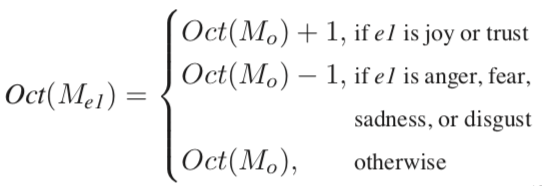
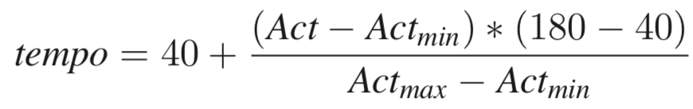

Text Pre-Processing
We are able to read text from a text file or a URL of a Wikia page for a character. Taking the text as input, we clean it of all punctuation and stop words.
TransProse 2.0 is an extension of prior work by Hannah Davis and Said Mohammed that generates music from literature. We've recreated the original model by Davis and added harmonization, as well as connected the system to Magenta which takes a MIDI primer and generates contiuations of the music. Our goal is to generate leitmotifs for characters based off of descriptions of the character

We are able to read text from a text file or a URL of a Wikia page for a character. Taking the text as input, we clean it of all punctuation and stop words.

With the filtered list of words, we examine each word and compare it against the NRC Emotion Lexicon to count the number of words at are associated with positive and negative connotations, as well as emotions such as fear, anger, trust, sadness, disgust, anticipation, joy, and surprise. From there, densities of a particular emotion are calculated against the overall number of words.

TransProse simplifies mode selection by limiting to two diatonic modes Major (Dorian) and Minor (Aeolian). for simplicity, TransProse outputs either C Major or A Minor (the relative minor key of C Major), essentially a Key Signature with no sharps or flats. Once the output is produced, a composer could transpose, or shift the key, of the theme.
Mode selection is calculated based on the ratio of negative to postive words in the entire text. A ratio of above 1 is mapped to C Major while a ratio of below 1 is mapped to A Minor.
The original TransProse algorithm maps text features to three simultaneous melodies. The first melody represents the overall emotional arc of the text, while the 2nd and 3rd melodies represent the 1st and 2nd most prevelant coded emotions in the text. For example, a text might have an overall emotional melody, a melody representing the anger as tracked over the entire text, and a melody represnting sadness over the entire text.
The voicing of each melody, in other words, what octave on a piano the melody will traverse, is proportional to the difference between the joy and sadness densities of the text. The voicing of the main melodic line is calculated via equation to the left.
Here, JS represents the difference between the Joy and Sadness densities in the input text. JSmin represents the minimum JS value across a corpus of texts that the authors analyzed while JSmax represents the max across that corpus.
This guarantees that the overall melodic voice (M0) is linearly mapped to either octave 4, 5, or 6 on a piano keyboard. The second two melodic voices are then calculated based off the octave of M0.
In other words, the octave of M1 is an octave higher than M0 if the emotion it represents is a positive emotion (Joy or Trust), an octave lower if the emotion it represents is negative (Anger, Fear, Sadness, or Disgust), and the same if the emotion it represents is Surprise or Anticipation.
Each melody is split into four sections that map to four sections of the novel: beginning, early middle, late middle, and conclusion. TransProse also simplifies the phrase structure in that each section is reprented by exactly four measures. This results in a theme of exactly 16 measures in length. In this manner, each measure represents the corresponding sub-section of the input text.
Each musical note needs to represent a specific length of time. TransProse purposefully limits itself to notes across 5 different durations: whole notes, half notes, quarter notes, eighth notes, and sixteenth notes. In essence, the system aims to represent high emotional content with many notes, while lower emotional content is mapped to fewer notes. To do this, we create a piecewise linear mapping by aking the interval between maximum emotional density and minimum emotional density and splitting it into five equal parts. Thus, for each measure (or subsection of the input text), the density is mapped to a specific number of notes depending on within which interval the density lies.
Until now, we have forgone a discussion of what might be the most important part of melody composition: pitch. Just as duration is calculated based on the correpsonding subsection of the input text, so is pitch. The underlying idea is that more consonant pitches in the key are mapped to lower emotion densities while less consonant pitches are mapped to higher emotion densities.
Consonance is piecewise mapped similar to note density, except it is based on the idea of scale degrees across the corresponding Major or Minor scale. Each of the 7 notes of a Major or Minor scale is referred to as a scale degree where, due to the harmonic series, most Western musicians hear as more consonant or less consonant in that key.
| Scale Degree | Name | Consonance Ranking (lower means more consonant) |
|---|---|---|
| 1 | Tonic | 1 |
| 2 | Supertonic | 5 |
| 3 | Mediant | 3 |
| 4 | Subdominant | 6 |
| 5 | Dominant | 2 |
| 6 | Submediant | 4 |
| 7 | Subtonic (in minor) | 7 |
| 7 | Leading Tone (in major) | 7 |
TranProse makes a number of simplifications in order to set a tempo for the melodic lines. Firstly, it assumes a common time meter. That is, there are four beats in a measure in a duple meter. However, the underlying priciple is easy to understand: the more active the input text, the higher the tempo. The less active, the lower the tempo. The original TransProse system calculates this directly via equation below:
However, because the authors make the max and min values dependent on their own corpus (which is not specified), we created a different linear mapping that encodes the same sort of relationship. In essence, each piece starts with a tempo of 90 beats per minute. That tempo is then modified by the ratio of active to passive densities in the input text.
!!!
Listen below for example output from various character descriptions as input
TransProse 2.0 was built by:
Kevin Chan (kevinchan2019@u.northwestern.edu)
Connor Bain (connorbain2015@u.northwestern.edu)
TransProse 2.0 leverages the following Libraries:
Pickle, Magenta, NumPy, Pandas,Math, Beautiful Soup, and Pretty MIDI